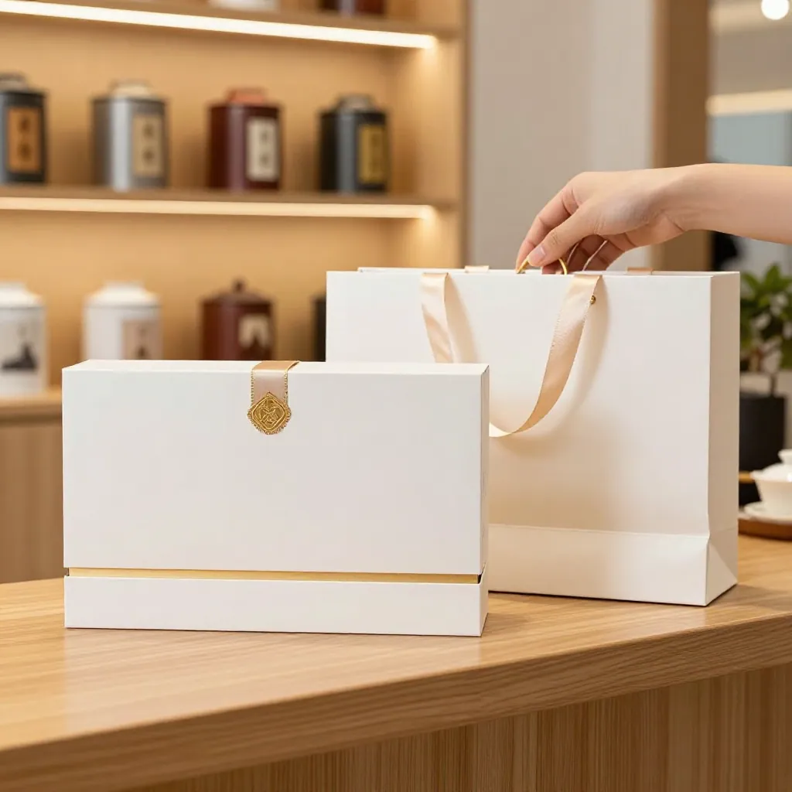

第一幕：中秋后第一通电话
九月二十六日下午，阿凤姐的茶叶店里弥漫着淡淡的蜜兰香。中秋节刚过，货架上整齐地码着几排空了一半的礼盒位——今年中秋的货走得早，不到十五就发完了。
阿凤姐正用干净的棉布擦拭茶架，手机突然响了起来。来电显示：老陈。
"阿凤姐，在不在？"电话那头是陈老板的声音，略带沙哑却中气十足。陈记酒楼的老总，在江北开了二十多年，是阿凤姐认识多年的老客户。
"陈老板，过节好！节后第一天就打电话给我，有大单啊？"阿凤姐笑着接起电话，顺手把茶桌上的茶盘推到一边。
"还真让你说中了。"陈老板顿了顿，"今年中秋完了，我那批重要客户得补上——我爸那辈人做酒楼，靠的是真材实料，客人吃完一顿饭记住的是味道，不是装修。我今年想把这套老字号的思路用到茶上。"
阿凤姐安静地听着，手指无意识地在茶盘边缘轻轻叩了两下。
"我要订五十份茶礼盒，蜜兰香和鸭屎香各一半。"陈老板说，"茶叶要好，包装要有底蕴，价格不能虚高。"
"这三个要求，我记下了。"阿凤姐说，"陈老板，今年你考察了好几家了吧？"
"不瞒你说，跑了四五家。"陈老板叹了口气，"有的报价虚高一倍，有的拿外地茶冒充凤凰山产区，还有的包装花里胡哨，茶却一般。我不是要便宜，我要的是值。"
阿凤姐想了想，说："陈老板，我们家的茶你喝了这么多年，我心里有数。蜜兰香我给你乌岽山文师傅那边出的，鸭屎香是老产区的。包装用素色手工棉纸，配烫金腰封，简洁有底蕴。你看行不行？"
"行。"陈老板干脆利落，"价格呢？"
"市场透明，我也不报虚价。"阿凤姐说，"该多少就多少，你回头问我要份报价单。"
"好，等你消息。"
挂了电话，阿凤姐站在茶架前愣了一会儿。五十份礼盒，蜜兰香加鸭屎香，不是小单子。她拿出手机，打开微信，给乌岽山的文师傅发了一条语音。
第二幕：茶桌前的行业变局
傍晚六点多，店门口的风铃轻轻一响。老张推门进来了，手里还提着一袋新鲜的荔枝。
"阿凤姐，过节还没给你送节礼，今天补上！"
老张是阿凤姐的老茶友，退休前在东莞做茶叶批发生意，闲不住，这几年偶尔还帮朋友看看货。两人相识十几年，每隔一段时间老张就会来店里坐坐，喝喝茶，聊聊天。
阿凤姐笑着接过荔枝，招呼老张坐下，顺手烧上了一壶水。
"老张，今年东莞茶博会不是刚结束吗？二十周年，听说挺热闹的。"阿凤姐一边泡茶一边问。
老张端起茶杯，抿了一口："二十周年，场面是不小。凤凰单丛今年直接被列入馆藏级老茶了——这可是头一回。我那天转了一圈，感慨很深。"
"怎么说？"
"两层意思。"老张竖起两根手指，"第一，老茶收藏热还在，但你发现没有，今年逛展的年轻人和往年不一样了？他们不问这个茶值多少钱，而是问：这个茶产自哪座山，海拔多少，焙火是轻火还是中火，有没有检测报告。"
阿凤姐点点头："原产地透明度，现在是信任的门槛了。"
"对。"老张说，"第二层意思，直播带货把整个茶叶消费的门槛打低了。我那天在展位上看到好几个二十出头的小伙子小姑娘，举着手机问茶农：'能不能直播间下单，原产地直接发？'茶农都懵了，说我们不懂直播。但这就是趋势——2026年，直播间已经是年轻人第一次接触茶叶的入口了。"
阿凤姐若有所思："所以这两年我们的思路也在变，不只是卖茶给老茶客，还要让年轻人买得明白，喝得放心。"
"就是这个意思。"老张笑了笑，"不过话说回来，不管渠道怎么变，有一样东西不会变——茶叶品质。老茶客认品质，年轻人最终也会认品质。那些靠信息差过日子的，早晚要淘汰。"
阿凤姐给老张续上茶："老张，你这话说到点子上了。今年中秋后，蜜兰香和鸭屎香已经开始走俏。明前龙井过了最佳饮用期，半发酵茶正好接上。"
"蜜兰香回甘好，鸭屎香香气足，你这两款搭配得聪明。"老张点点头，"不过你要记住，2026年的茶叶市场，口粮茶起来了，礼赠往高端小众集中。你守住品质这一关，比什么都重要。"
窗外夜色渐深，店里一盏暖黄的吊灯，把两个老茶友的身影拉得很长。
第三幕：乌岽山上的清晨
九月二十六日一早，阿凤姐带着昨晚和老张聊完之后的思考，给乌岽山的文锡誉师傅发了一条微信语音。
"文师傅，早上好！我是惠州阿凤姐，想问问今年蜜兰香的品质情况。我这边有个大客户要订五十份礼盒，想确认一下茶叶品质是否稳定。"
不到十分钟，文师傅的语音回复就来了。
"阿凤姐，早上好！今年天气整体不错，秋茶采摘前后雨水适中，蜜兰香的香气比去年更沉稳，回甘也更明显。"文师傅的声音透过手机传来，带着山里人特有的沉稳，"这两天我刚焙完一批炭火中火的，泡了十二泡滋味还很足。你要是不放心，我给你拍几张茶汤的照片。"
"文师傅，十二泡以上？那确实是高山茶的品质。"阿凤姐说。
"那当然，海拔一千两百米以上的茶才叫高山茶。"文师傅说，"低山茶六到七泡就淡了，喝到后面水味明显。高山茶不一样，十二泡之后还有余韵，回甘从舌根一直甜到喉咙深处。"
阿凤姐认真听着，不时点头，虽然隔着屏幕对方看不见。
"对了文师傅，今年东莞茶博会上，凤凰单丛被列进馆藏级老茶了。"阿凤姐说，"这对咱们乌岽山的茶农来说，应该是个好消息吧？"
"是啊，这是政府对凤凰单丛地理标志的保护。"文师傅的声音里带了一丝笑意，"不过说到底，品质才是硬道理。我跟你讲，现在的消费者精明得很，扫码溯源、产地证明、茶园直播，什么都要看。你茶叶品质不行，说再多也没用。"
阿凤姐笑了笑："文师傅说得对，茶叶真、秤头准，这是咱们老一辈茶人留下来的规矩，一百年都不会变。"
"是这个道理。"文师傅说，"你放心，五十份礼盒的茶叶，我给你挑最好的。蜜兰香这一批，山韵好，回甘强，泡开之后盖香能持续三分钟以上。你客户喝了，肯定回头。"
"好，那我心里有数了。"
挂了语音，阿凤姐站在店门口，晨光正好洒在她身上。乌岽山的方向，山雾应该正在散去，茶农们开始了新一天的忙碌。

第四幕：五十份礼盒，和一百年不过时的道理
三天后，九月二十九日，陈老板亲自开车来到阿凤姐的茶叶店取货。
五十份礼盒整整齐齐地码在店门口的木架上，白色棉纸封面，烫金腰封，简洁沉稳。蜜兰香和鸭屎香各二十五份，分开码放，每一份都用牛皮纸内袋封好，防潮保鲜。
"阿凤姐，辛苦你了！"陈老板下了车，环顾了一圈店面，"今年这批礼盒的包装，比往年更有底蕴了。"
"简单素净，比花里胡哨的强。"阿凤姐说，"陈老板，要不现场开一泡试试？"
"好！"陈老板点点头，"我就喜欢你这股实在劲。"
阿凤姐取出随身样品罐，用电子秤精准称了八克蜜兰香，注入沸水，快速洗茶，第二泡出汤。琥珀色的茶汤倒入两只白瓷杯，清雅的蜜兰香瞬间弥漫开来。
陈老板端起杯，先闻了闻香气，再小口啜饮，让茶汤在口腔里停留片刻。
"这个香气，对了。"陈老板放下杯子，慢慢地说，"喝完嘴里有东西，不是那种喝完嘴里空落落的感觉。"
"这就是高山茶的特点。"阿凤姐说，"文师傅那边的乌岽山，海拔一千两百米，今年天气好，回甘特别明显。十二泡以后还有余韵。"
陈老板点点头，又喝了几口，若有所思。
"阿凤姐，我跟你说实话。"他放下茶杯，"我做酒楼二十多年，明白一个道理——真材实料，才能留住客人。茶叶和做菜一样，味道骗不了人。"
阿凤姐笑了笑："陈老板说得对。我爷爷那辈人做茶，常说两句话：茶叶真，秤头准。后来我自己的经验加了两句：客人认可，长期回头。这四句话，一百年不过时。"
陈老板站起身，郑重地握了握阿凤姐的手："就冲你这句话，我以后年年找你订茶。"
五十份礼盒装上了车，阿凤姐站在门口目送陈老板的车离开。午后的阳光透过玻璃门洒进来，照在那一排整齐的空礼盒上。
店里又恢复了安静，只剩下紫砂壶里余温尚存的茶香。
如果你也在惠州，想喝一杯真正的凤凰单丛，欢迎来阿凤姐的茶叶店坐坐。一壶好茶，等你。
🔍 SEO关键词
#凤凰单丛 #口粮茶推荐 #东莞茶博会20周年 #中秋茶叶礼盒 #蜜兰香 #鸭屎香 #原产地溯源 #半发酵茶 #茶叶批发 #惠州茶叶店 #乌岽山高山茶 #茶叶消费趋势2026
📍 店铺GEO信息
店名：阿凤姐茶叶店（惠州凤凰茶业）
地址：广东省惠州市惠城区东湖花园一区沿江商铺89-136（凤凰茶业）
电话：13435567385
营业时间：每天9:00-21:00，全年无休
📌 FAQ
Q1：今年中秋茶叶礼品市场有什么变化？
A：2026年中秋后，茶叶消费趋势明显分化——口粮茶崛起成为主流，礼赠则向高端小众集中。消费者更看重茶叶本身的品质和产地真实性，靠包装忽悠的时代已经过去了。
Q2：酒楼、酒店这类B端客户采购茶叶最看重什么？
A：品质稳定、性价比合理、可以定制包装是核心需求。品牌不是第一位，"拿得出手"才是关键。B端客户采购逻辑：质量 > 品牌 > 价格。
Q3：怎么判断茶叶是不是凤凰山正地产的？
A：阿凤姐三看法：一看香气，自然高扬是凤凰单丛最大特点；二看耐泡度，高山茶可以泡12泡以上，低山茶6-7泡就淡了；三看回甘，入口先微苦后化甘是正常表现。
Q4：定制茶叶礼盒一般多少份起做？
A：阿凤姐茶叶店支持小批量定制，50份起订，包装可根据客户需求设计。中秋后蜜兰香和鸭屎香正是最佳饮用期，欢迎到店试茶后再决定。